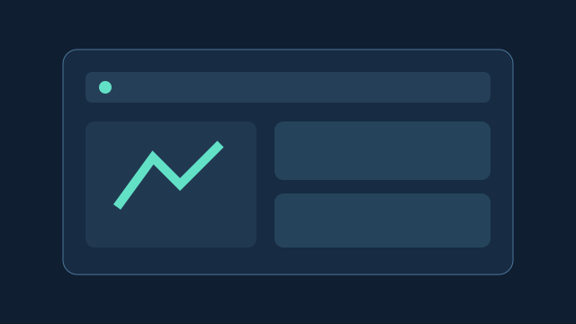
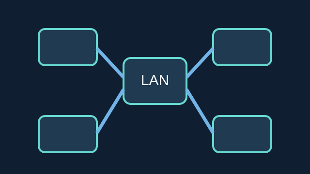

HTML · CSS · JAVASCRIPT
Student Portfolio
A responsive, multi-page website presenting a student profile, projects and contact details.
View live sample ↗Three illustrative learning projects showing the kinds of technical problems I am exploring. These are sample project concepts for my COS 106 portfolio.

A responsive, multi-page website presenting a student profile, projects and contact details.
View live sample ↗
An illustrative small-campus LAN layout connecting devices through a central network.
Read concept ↓An interactive browser-based tool to add, complete and remove academic tasks.
Try the planner ↗The network diagram above is a conceptual illustration, not a deployed campus network. The portfolio and planner can be explored using the links above.
Use the audio player below for a short introduction to the website and its features.